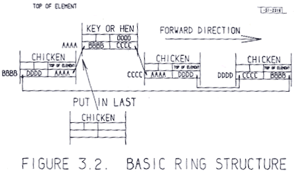
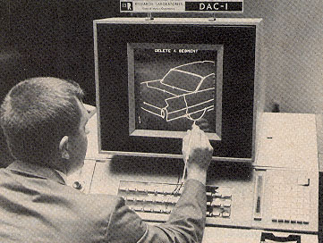

|
Ekranda geliþtirilen tasarýmý kaðýda dökmek için de Resim 7'de görülen ve EAI firmasý tarafýndan geliþtirilmiþ olan yazýcýyý kullandýlar;
Resim 7: EAI firmasý tarafýndan geliþtirilmiþ olan kalemli yazýcý
Sutherland, grafiksek ve sayýsal bilgileri saklamak için "Ring Structure" adýný verdiði bir veri tabaný geliþtirdi. Bu veri tabanýnda, örneðin bir çizginin hangi noktasýndan diðer bir çizgiye baðlý olduðu gibi topografik bilgileri bir hiyerarþik düzende saklayabilme yeteneði vardý. Ayrýca, "pointer" larý kullanarak veri tabanýnda geri ve ileri hareket etme yeteneðini saðlýyordu. Bu veri tabanýnýn yapýsý ve örnek bir iþlem Resim 8'de görülebilir.

Resim 8: Veri tabaný yapýsý
Sutherland, Sketchpad ismini verdikleri bu sistemin donaným ve yazýlýmýný geliþtirmiþ oldu. Veri tabanýna ek olarak çeþitli komutlardan oluþan bir de grafik yazýlým dili geliþtirdi. Bundan sonra ilk uygulamalara geçildi. Resim 9'da bir köprünün çizgisel bir modelini görüyorsunuz.
Resim 9: Köprünün çizgisel modeli
Resim 10'da ise dört çubuk mekanizmasýnýn bir animasyonunu görmektesiniz;

Resim 10: Dört çubuk mekanizmasýnýn animasyonu
Resim 11'de çizgisel bir grafik ile gösterilen bir kýzýn göz kýrpma animasyonu yapýlmaktadýr;
Resim 11: Göz kýrpma animasyonu
Sutherland'in bu çalýþmasý bir araþtýrma raporu olarak 30 Ocak, 1963'de yayýnlandýðý zaman çok büyük ses getirdi. Çünkü ilk defa görüntülü, etkileþimli bir sistem yeni girdi ve çýktý aygýtlarýnýn da yardýmý ile yazýlýmý ile birlikte tasarýmcýlarýn hizmetine sunuluyordu. Söz konusu tarihi raporun kapak sayfasý Resim 12'de görülmektedir. Bu nedenle bu tarih, Bilgisayar Destekli Tasarým'ýn doðum tarihi olarak bilinir.
Resim 12: Sketchpad proje raporunun kapak sayfasý
Bu raporun 2003 versiyonunu pdf formatýnda indirmek için týklayýnýz;
Sketchpad: A man-machine graphical
communication system, Ivan Edward Sutherland, September 2003
www.cl.cam.ac.uk/techreports/UCAM-CL-TR-574.pdf (3,9MB)
Bu tarihte yazar Londra Üniversitesi, Imperial College'de doktora tezini yazarken, ayný zamanda International Computers Ltd. Þirketi'nde grafik ekran ve ýþýk kalemi takip yazýlýmýný geliþtirdiðinden, Sutherland ile temas halindeydi ve raporun ilk kopyalarýndan biri kendisine iletilmiþti.
1962 yýlýnda MIT'de PDP-1 modeli bilgisayarla yapýlan bir CAD uygulamasý
(www.computer-history.info/Page4.dir/pages/PDP.1.dir)

DAC-1, (Design Augmented by Computer) 1959 yýlýnda,
IBM tarafýndan General Motors için geliþtirlen ilk ticari CAD sistemidir.
(http://design.osu.edu/carlson/history/timeline.html - http://design.osu.edu/carlson/history/lesson3.html)
1960 yýllarý ortalarýnda bilgisayarlarda tümleþik sistemlerin (Integrated Circuit- IC) uygulanmasýna baþlandý. Bu sayede bilgisayarlar küçüldü ve hýzlandý. Ayný zamanda, bilgisayar þirketleri, grafik ekranlar, klavyeler, ýþýk kalemleri, "mouse" lar ve yazýcýlar gibi
CAD iþ istasyonlarý çevre ünitelerini geliþtirmeye baþladýlar. Ancak, CAD sistemleri için yazýlým çok önemli idi. Bu çalýþmaya baþlayanlar, bilgisayar þirketleri deðil bu ileri teknolojinin ilk kullanýcýlarý olan Uzay ve Havacýlýk þirketleri oldu. Örnek olarak, Lockheed þirketi CADAM programýný, Mc Donnell Douglas Þirketi Mc Auto'yu (daha sonra Unigraphics oldu). Marcel Dassault Þirketi CATHIA'yý geliþtirmeye baþladý. Ýlerleyen yýllarda bu programlar bilgisayar þirketlerince de geliþtirildi ve pazarlandý.
Sutherland, MIT'den ayrýldýktan sonra memleketi olan Utah eyaletine giderek özellikle uzay ve havacýlýk sektörü için CAD iþ istasyonlarý donanýmý ve yazýlýmý geliþtiren Evans & Sutherland (E&S) firmasýný kurdu ve uzun yýllar bu sektör için üretim yaptý.
1970 li yýllarda artýk CAD sistemleri büyük sanayi kuruluþlarýnda yer almakta idi. Bilgisayar teknolojisinde ise "Medium Scale Integration" (MSI) türünde tümleþik devrelerle hýzlar ve kapasiteler daha da arttý. 1978 yýlýnda ilk kiþisel bilgisayar Apple firmasý tarafýndan, 1981 yýlýnda da IBM tarafýndan üretildi. Artýk kullanýlan teknoloji de "Large Scale Integration" (LSI) olduðundan hýz ve kapasiteler çok artabilmiþti. Bu hýzlý tempo günümüze kadar artarak devam etmiþtir. Þimdi artýk günümüzde 5 GFLOP hýzýnda CAD iþ istasyonlarý vardýr...
|